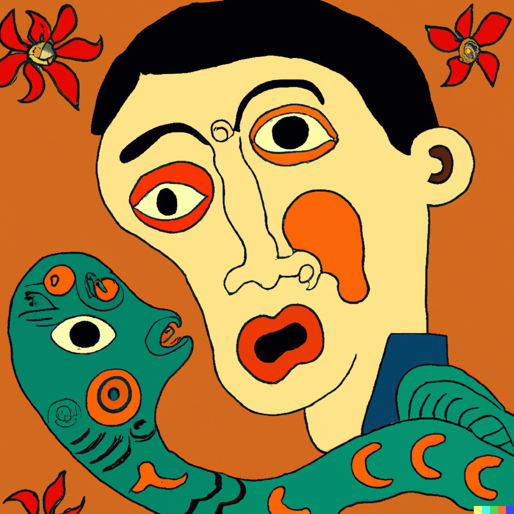

Originality

Imitation can be a useful learning tool for beginners in any field, including design. However, when we rely too heavily on imitation, it can evolve into plagiarism, which is both unethical and detrimental to our growth as designers. The reason behind this transformation is that excessive imitation stifles our ability to think independently and develop original ideas, causing us to merely reproduce existing works instead of pushing our creative boundaries.
Plagiarism not only hampers our progress as individuals but also damages our reputation and credibility within the industry. As we continue down this path, our creative spark may gradually fade, leaving us unable to innovate and contribute to the field in meaningful ways. Therefore, it is essential to strike a balance between learning from others and nurturing our unique perspectives, ensuring that we develop as skilled, ethical, and creative professionals.